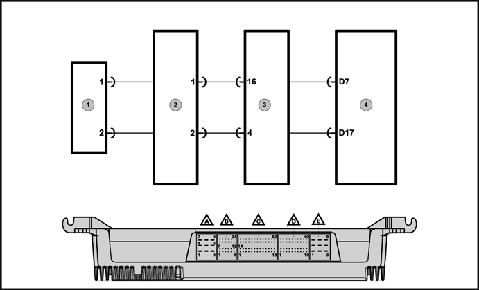
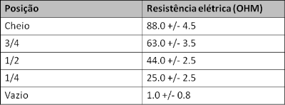
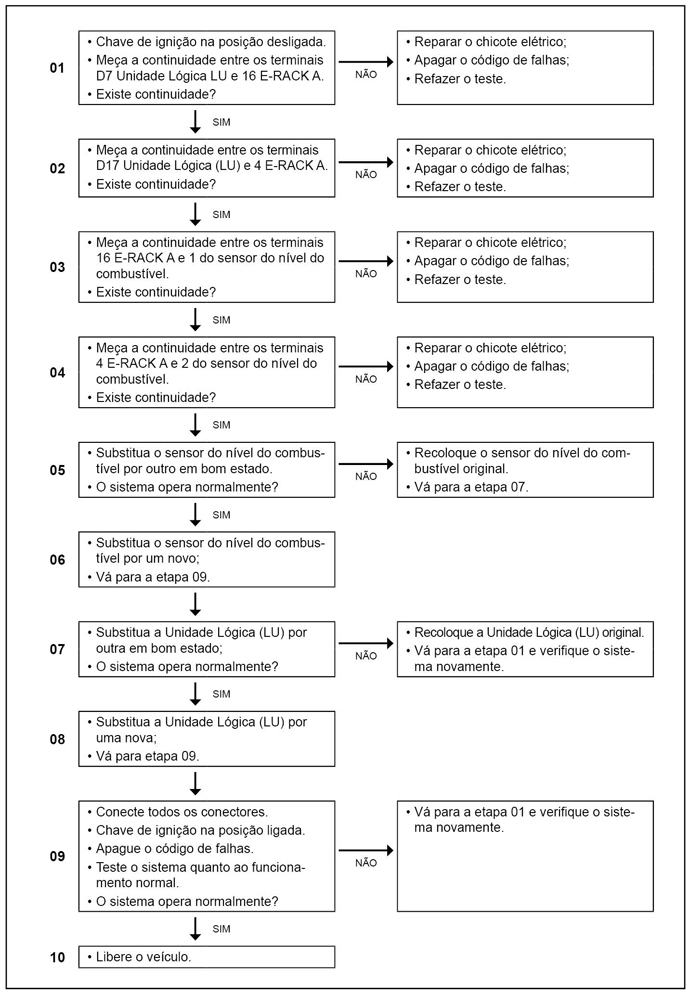

 
Legenda
- Sensor do nível de combustível gasolina.
- Conector intermediário do chassi.
- Conector E-RACK A.
- Unidade lógica (LU).
Descrição da Falha
Circuito do sensor de
combustível, corrente abaixo do normal ou circuito aberto.
Indicação de falha
A luz de advertência (amarela)
no mostrador do nível de combustível ficará acesa.
Estratégia de Monitoramento
A Unidade Lógica (LU) monitora os
níveis de combustível no tanque, através do sensor de combustível.
Efeito da Falha
O indicador de nível de
combustível não funcionará e ficará no nível vazio.
Possíveis Falhas
FMI 00: Dados válidos, mas acima da faixa operacional.
FMI 01: Dados válidos, mas abaixo da escala operacional normal.
FMI 02: Dados errados, intermitentes ou incorretos.
FMI 03: Tensão acima do normal, curto circuito ao positivo.
FMI 04: Tensão abaixo do normal, curto circuito ao massa.
FMI 05: Corrente abaixo do normal ou circuito aberto.
FMI 06: Corrente acima do normal ou circuito aterrado.
FMI 07: Sistema mecânico não responde ou fora do ajuste.
FMI 08: Frequência ou largura de pulso anormal.
FMI 09: Taxa atualização anormal.
FMI 10: Taxa de mudança anormal.
FMI 11: Causa raiz desconhecida.
FMI 12: Dispositivo ou componente inteligente ruim.
FMI 13: Fora de calibração.
FMI 14: Instruções especiais.
FMI 15: Dados válidos mas acima da faixa operacional normal - nível pouco severo.
FMI 16: Dados válidos mas abaixo da faixa operacional normal - nível pouco severo.
FMI 17: Dados válidos mas abaixo da faixa operacional normal - nível pouco severo.
FMI 18: Dados válidos mas abaixo da faixa operacional normal - nível moderadamente severo.
FMI 19: Erro de dados recebido da rede.
FMI 31: Não disponível ou condição inexistente.
– Sensor com defeito.
Avisos
 
Leia sempre as Recomendações para
Diagnósticos.

Registro de Falhas em
Outro Módulos de Comando
----
Passos do Diagnóstico de Falhas
Considerar os esquemas elétricos do veículo

|